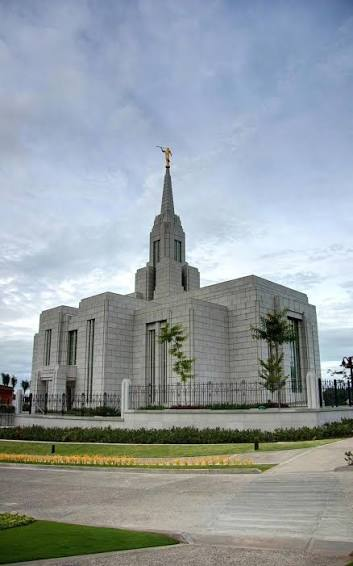
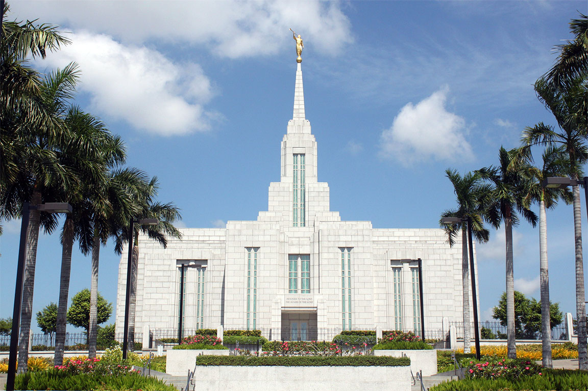
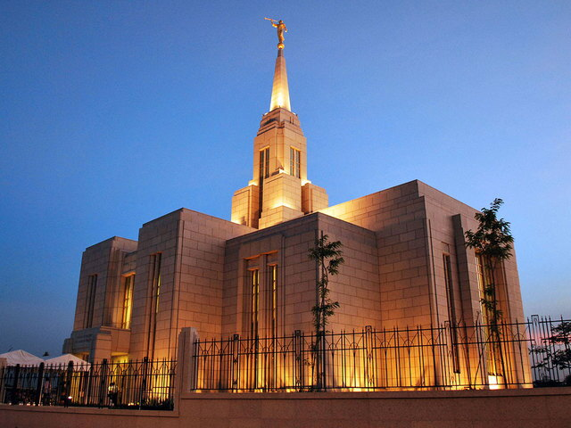

Temple for Me
For me, the temple is a peaceful place where I can escape the stress of daily life and just feel God's love. It's super important to me because it's where we make the special promises that keep our families together forever. Going there resets my focus on what actually matters and helps me stay on the right path.
My Favorite Temple



Cebu City Temple
Honestly, that boat ride to Cebu is pretty draining, but sitting on a bench outside the temple makes it worth it. The second I sit down in the gardens, all my stress goes away. The temple is important to me because it's the only place we can make promises to God that keep our families together forever. Feeling that peace out there just reminds me that whatever craziness I'm dealing with, the covenants I make inside are what really matter.
Favorite Temple song
Whenever Im at the Cebu temple, I always find a quiet spot on the grounds just to sit and listen to "Peace in Christ" for a few minutes. The gardens there are already beautiful, but playing that song just makes the whole experience so much better. Its like the lyrics perfectly capture what the temple feels like. It's just my favorite way to feel the Savior's love and get my heart right before I even walk inside.
Peace in Christ
Focus on the Temple
Russell M. Nelson October 2022 General Conference
Cebu Temple Tour
By Sister Matthews and Sister Laña